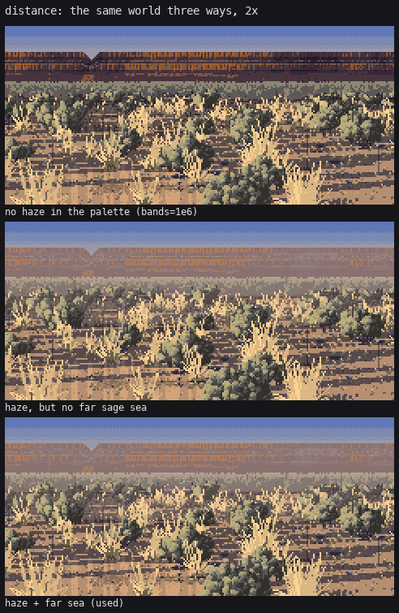

7. Cameras and distance
The standing view's distance handling is ready. The wide iso view isn't.
Two cameras, one world
world.py has two cameras over the same ground plane, in metres:
class Iso: # orthographic, looking down at el degrees, ppm pixels per metre
def project(self, X, Z, hgt=0.0):
return X * self.ppm, self.H - Z * self.ppm * self.s - hgt * self.ppm * self.c
def ppm_at(self, Z):
return self.ppm
class Persp: # a standing viewer: eye height, focal length f px, horizon row hy
def project(self, X, Z, hgt=0.0):
k = self.f / Z
return self.W / 2 + X * k, self.hy + (self.eye - hgt) * k
def ppm_at(self, Z):
return self.f / Z
Every decision about marks is made from ppm_at(Z), the pixels per metre where the plant stands, and never from "near" or "far". A sage 1 m wide is 110 px at 3 m and 2 px at 200 m, and the painter for each is chosen from that width alone (page 3: full sprigs from 16 px, a simpler bush from 5, a dab from 2, never gone). The same holds for grass, pines and pebbles, and for the ground's own noise scales. That's why the zoom ladder below can be one world at thirteen scales.
Sprites are painted in their own view space. For iso the light is rotated into the camera's frame, so a mid-morning sun at 30° down is mostly front light on the bush:
def view_light(L, cam_el):
e = np.radians(cam_el)
u = np.array([0, np.cos(e), -np.sin(e)]) # screen up in world
v = np.array([0, np.sin(e), np.cos(e)]) # toward viewer in world
out = np.array([L[0], L @ u, L @ v])
return out / np.linalg.norm(out)
In iso the sage is therefore lit over most of its face, and its form lives in the sprig tops and gaps rather than in a terminator. On screen its height is the plant's height × cos 30° plus half its depth × sin 30°: you see some of the top. (The standing view uses view_light(Lw, 4.0). The 4° is my guess at the typical downward look to a shrub 10 m off, not a measurement.)
Distance in the standing view

figs.fig_distance: the same world with the palette's depth haze switched off (bands=1e6), then with haze, then with haze plus the far sage "sea".
Three rules, and they add up:
1. Two values past band 2. A sprite beyond 30 m has its steps collapsed onto two close values with no darkest index. Ferrari lifts the black point with distance, and the palette's haze does the colour.
if band >= 2:
m = spr.mat > 0
spr.step[m] = np.where(spr.step[m] <= 2, 2, 3)
2. The palette's haze (page 5): darks pulled hard toward the hour's haze colour, lights barely.
3. The far sea. Beyond the distance where a sage is about 2 px wide, individual shrubs stop being shapes (downsample a Seedskadee photo to scene size and you see exactly where). scene._far_sea stops placing sprites there and paints the shrubs into the ground: horizontal flecks (a foreshortened noise, X * 0.35), two values, whose cover follows a 60-m swale field. That gives the far flat value masses, a darker draw and a paler flat, instead of one even band:
zlim = cam.f * pl["sage_size"][0] / 2.5
far = (ys > cam.hy + 0.5) & (Z > zlim)
cover = min(0.9, pl["sage"] / 40.0)
swale = world.fbm(X, Z, 60.0, seed + 55)
local = np.clip(cover + (swale - 0.5) * 1.2, 0.02, 0.95)
dash = world.vnoise(X * 0.35, Z, np.maximum(0.3, Z / cam.f * 1.0), seed + 56)
fleck = far & (dash < local)
_zvis is the other half of this: sprites aren't even generated past the distance where they'd be under a pixel. Together with the k-d tree on page 4, that took the standing view from about a minute to about ten seconds.
Before these rules, the far band had full near-field contrast right up to a ruled horizon:

The first standing view. The critic: "dark slate pixels and yellow tuft flecks right up to a dead-straight 1-px horizon."
The zoom ladder

Sheet F: iso 30°, the same world and seed at 48 → 3.3 px/m in 1.25× steps. Built to find pops, following the grass-lod critic's advice to step 1.25× instead of 4×.
What it showed, and what I fixed:
- Tussocks turned to salt and pepper from about 10 px/m down, where every small tussock became a dark-footed Y with a shadow. The first ladder:

The fix is the size-ramped merge into the ground's tone (page 4). The hand-off from 10 to 6 px/m is now gradual. - Nothing vanishes. The smallest sage is 2 px and the smallest pine a 2-px spire, so no row of the ladder loses a plant class suddenly.
Where it falls short
- The wide iso view (3–6 px/m) is busy. Every sage is a dark dab with a shadow, and the bottom row of sheet F reads as dots. Two reasons, one found only while writing this page: iso's
band()returns 0 everywhere, so none of the distance rules above ever run in iso. The far-field idea from the standing view (shrubs merge into ground tone with value masses) should be ported to iso as a function ofppm, not ofZ. - In the standing view the rim and far hills are painted into band 3 and 4 directly. They don't come from the same world, so they can't be walked toward.